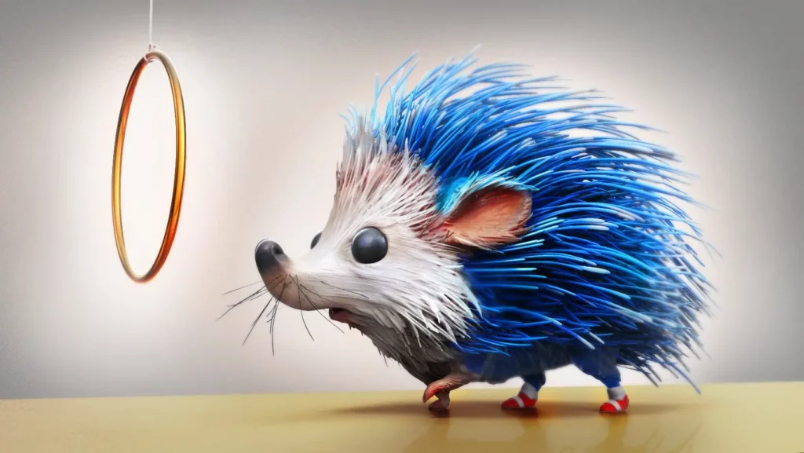
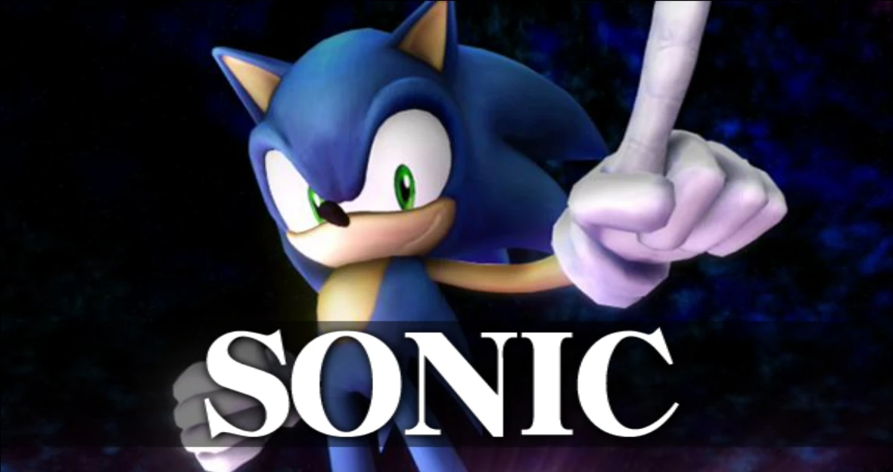
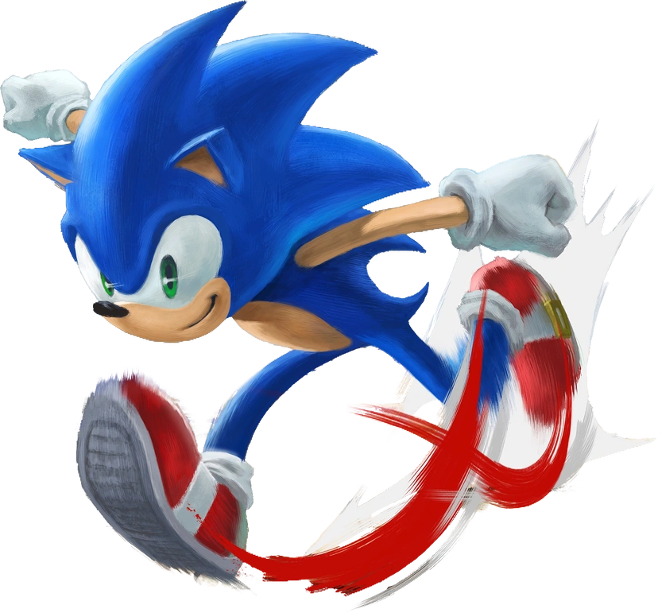
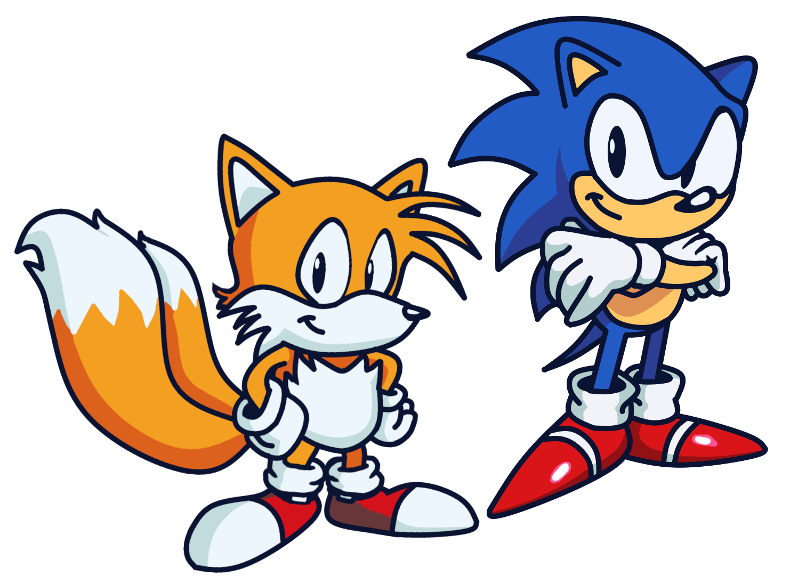
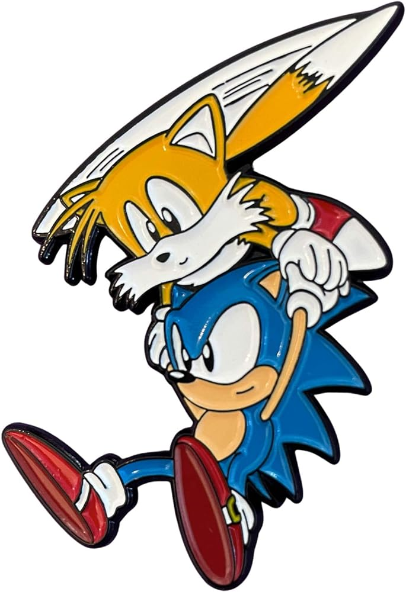
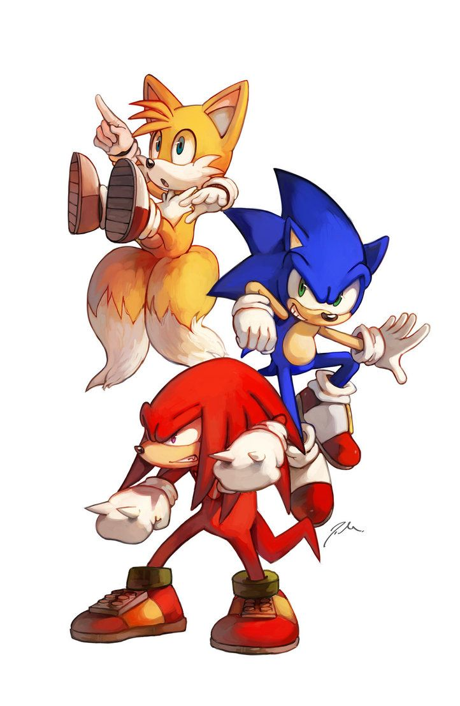
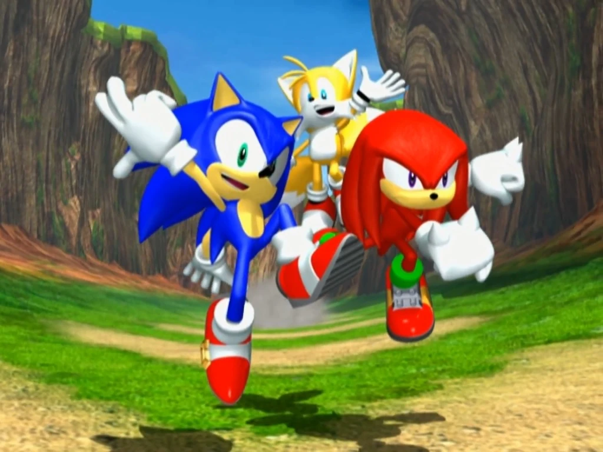

Your browser does not support the video element.
Home
What Is Smash Bros.?
My Smash Ultimate Mains
About King K. Rool
Frame Data: King K. Rool
Frame Data: Sonic
The Competitive Scene
Recommended Equipment
Fun Facts About Smash Bros.
Who Is Sonic?
Sonic the Hedgehog is one of the most popular video game characters ever created, and was made by Yuji Naka. Sonic and the franchise's characters are owned by SEGA, and Sonic is their mascot. His first appearance was a cameo in 1991, when he was a character in Rad Mobile, a racing game made by SEGA. The first game dedicated to him was created in 1993, with him starring as the main playable character. His defining characteristic is his intense speed. His game series started on the Sega Genesis, but eventually branched out to many more consoles, including SEGA's own consoles and when they stopped making their own consoles, third-party consoles as well. His most common sidekick throughout his adventures is Tails, a flying two-tailed fox.
Fun Facts About Sonic
The Sonic fan base is among the largest in gaming history.
Sonic's red shoes took inspiration from Michael Jackson's boots.
Sonic was made blue in order to match the color of SEGA's logo.
Sonic was created as a means to rival Nintendo's mascot, Mario.
Sonic has a long-running comic book series that was published by Archie Comics.
"Sonic Boom" is a Sonic spin-off series that houses both its own series of games and its own show.
The first time that Sonic aired on television was on September 6, 1993, with the airing of "Adventures of Sonic the Hedgehog."
Sonic has a werewolf-like transformation in the game "Sonic Unleashed", when he got these powers after being accidentally given them by Dr. Eggman after being captured in the introduction of the game.
Sonic starred in his own fighting game called "Sonic the Fighters", which exclusively featured characters from the Sonic franchise.
Sonic has an endless runner mobile game similar to Subway Surfers called "Sonic Dash."
Sonic is able to be seen wielding a sword throughout the game "Sonic and the Black Knight."
Sonic was in an RPG title called "Sonic Chronicles: The Dark Brotherhood."
 

 
 
Home
What Is Smash Bros.?
My Smash Ultimate Mains
About King K. Rool
Frame Data: King K. Rool
Frame Data: Sonic
The Competitive Scene
Recommended Equipment
Fun Facts About Smash Bros.